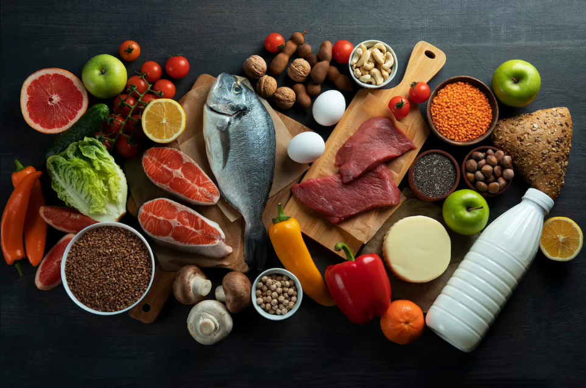

A rotina da população, cada vez mais é dinamizada devido a evolução da sociedade. Os grandes empregos cada vez mais exigem altas cargas horárias, necessitando assim de refeições rápidas, diante disso, nós tivemos o intuito de motivar as pessoas a praticarem uma alimentação mais saudável desenvolvendo um site que recomende alimentos adequados a determinados tipos de dietas, podendo variar entre dietas energéticas (alta quantidade de carboidrato); dietas de ganho muscular (maior ingestão de proteínas); e dietas específicas para diferentes tratamentos médicos (diabetes, colesterol alto).
Nosso site, por meio de pesquisas diversas, conseguiu separar os melhores alimentos para a prática de uma alimentacão saudável